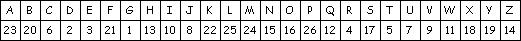
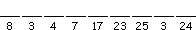
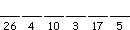
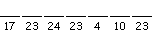
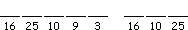
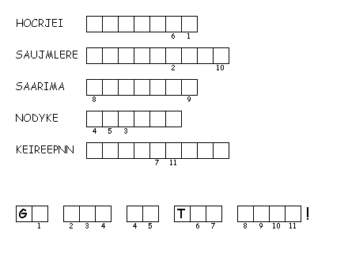

This Week: Amos 7:7-17 and Psalm 82 or Deuteronomy 30:9-14 and Psalm 25:1-10, Colossians 1:1-14, Luke 10:25-37
Elementary School Pew-work
Use this code to decode the missing words: Created by Puzzlemaker at DiscoverySchool.com

As a man was going down from  to Jericho, robbers attacked him and grabbed everything he had. They beat him up and ran off, leaving him half dead.
A  happened to be going down the same road. But when he saw the man, he walked by on the other side. Later a helper came to the same place. But when he saw the man who had been beaten up, he also went by on the other side. A man from  then came traveling along that road. When he saw the man, he felt sorry for him and went over to him. He treated his wounds with  and wine and bandaged them. Then he put him on his own donkey and took him to an inn, where he took care of him.
|
1. What did the priest do when he saw the man who had been beaten? _________________________________________________________________________ |
|
|
 Created by Puzzlemaker at DiscoverySchool.com |
2. Levites are the only tribe or family from which Jewish priests could be chosen. What did the Levite do when he saw the injured man? _________________________________________________________________________ 3. What did the man from Samaria see that no one else saw? _________________________________________________________________________ |
Next week:Amos 8:1-12 and Psalm 52 or Genesis 18:1-10a and Psalm 15, Colossians 1:15-28, Luke 10:38-42